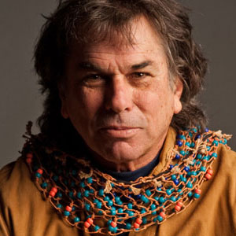

Mickey Hart
After sitting in with the Dead in 1967, he joined the band. Hart aimed to push the band into complex multirhythmic explorations, adding various strains of non-Western music to the Dead’s general atmosphere. The two drummers began to work diligently to create perfectly locked rhythms.